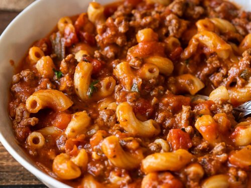

Goulaz

Ingredients needed:
- Onion
- Green Bell Pepper
- Ground Beef
- Garlic
- Tomato sauce
- Diced Tomatoes
- Beef Broth
- Worcestshire Sauce
- Seasond Salt
- Italian Seasoning
- Bay Leaves
- Dry Macaroni or Other Small Pasta
- Cheddar Cheese
Instructions:
- Start by browning the ground beef along with the onion and bell pepper. Drain any fat and then toss in garlic until fragrant.
- Pour in tomato sauce and diced tomatoes along with beef broth and Worcestershire sauce for some added depth of flavor.
- Add in the seasonings as well as dried macaroni noodles and let simmer until the noodles are cooked through.
- Finally stir in the cheddar cheese
back to home